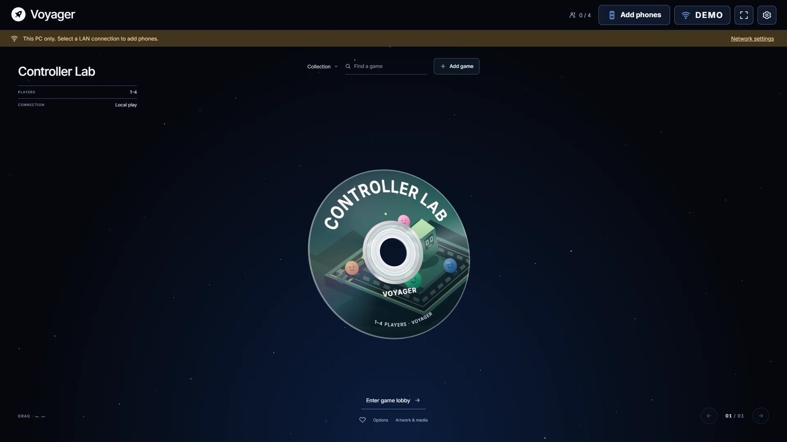
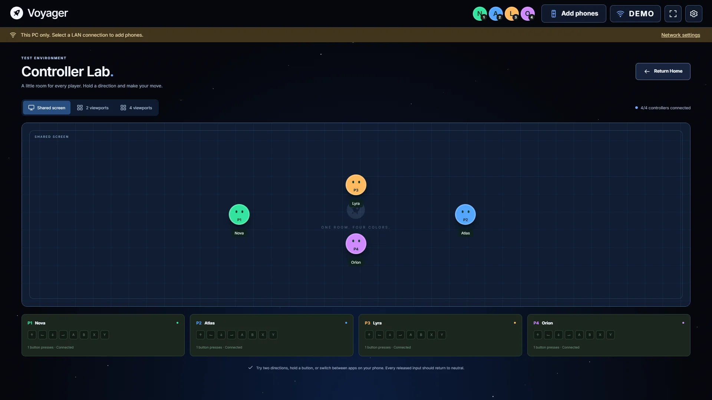
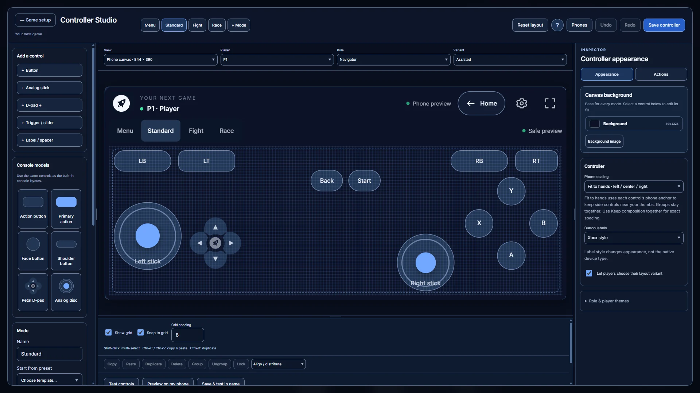

The WaterConsole upgrade
Your PC.
Their phones.
Game on.
Bring everyone into the same orbit. Turn your Windows PC into a local console, with up to four phones as controllers.
Free & open source. Start with Controller Lab.
WaterConsole, in a new orbit
A little more console.
A lot more you.
The PC-and-phone idea you know, with a collection that feels physical. Browse your discs, step into a game lobby, and make every setup your own.
Drag a disc or use the arrows. These discs introduce Voyager’s features; only Controller Lab is included in the download.
A real look inside
Less imagining.
More playing.
A fullscreen home for your games. A place for your friends. An editor for the controls you wish every game had.
Voyager / Collection

Voyager / Controller Lab

Voyager / Controller Studio

Same room. Same network.
You bring the PC.
They bring a phone.
Phones join in their browser. The PC approves each player, and everyone keeps their own controller slot.
-
01
Open Voyager
Start the Windows app. Connect the PC and phones to the same private Wi-Fi or hotspot.
-
02
Scan & approve
Scan the app’s QR, enter a name, and approve the matching connection on the PC.
-
03
Find your controls
Tap Enter controller on the phone. Open Controller Lab on the PC and give it a try.
A local connection belongs to your own PC. This website is a product preview and does not connect to your network.
A small taste of Controller Lab
Go ahead.
Press something.
Move the blue player with the D-pad. Press A for a jump, or B to reset. The little demo lives right here in your browser.
Website simulation. The Windows app connects real phones and supports up to four independent players.
Try the full Controller LabYour turn.
Touch the controls, or focus the play area and use your keyboard.
A controller that belongs to the game
Make room for
your way to play.
Racing needs room to steer. Action games need the right buttons within reach. Build a phone layout around what you actually play.
Your layout. Your actions. Your thumbs.
Put every action in reach.
Arrange sticks, D-pads, buttons and triggers. Create modes for different moments in a game.
Give each control a job.
Map actions to supported keyboard or virtual gamepad inputs, with bindings for each player.
Keep it personal.
Add your installed games, artwork, banners and trailers. Edit your setup whenever you need to.
You provide the games. Multiplayer, split-screen and input support depend on each game; some native setups need a supported virtual gamepad driver.
Built to be opened up
Your next game.
Your AI co-pilot.
Open the source in Codex or Claude Code. Let your assistant inspect a game’s controls, design a phone layout, and save it through Voyager’s validation toolkit.
AI runs in your coding assistant. Voyager has no built-in AI chat and asks for no AI API key. Generated controllers still need real playtesting.
Read the AI workflowAdd [game name] from my local installation to Voyager. Read AGENTS.md and docs/AI-WORKFLOW.md. Inspect the actual controls, then design a comfortable phone controller with explicit mappings for each player. Save it through the toolkit, preserve my existing library, and explain what has and has not been tested.
Editing app code? Close Voyager, then reopen the source project
with Voyager.cmd. The launcher rebuilds changes on
the next open.
Your next game night starts here
Ready when
everyone is.
Voyager is free and open source. The public download starts clean, with Controller Lab. Bring your own games and make it yours.
Donations are optional and support development.
PC Windows 10/11, x64
Phone A supported browser on your local network
First release Unsigned Windows build
How is Voyager related to WaterConsole?
Voyager is the upgrade to WaterConsole. It continues the same PC host and phone controller idea with a space-inspired interface, a 3D disc collection and game-by-game customization.
What comes with the download?
Controller Lab is the only included game. Your commercial games, saved controllers, personal library and account data are not bundled. You can add games you already have installed.
Do I need an app on my phone?
No dedicated phone app is needed. Scan the QR in Voyager and open the controller in your phone’s browser. Fullscreen, orientation and vibration support vary by device and browser.
Do we need the internet?
The core session works over your local network after setup. Downloading Voyager, setting up source dependencies, fetching game metadata and downloading trailers can require internet access. Keep devices on the same trusted private network.
Can every game use four phones?
Voyager has up to four phone controller slots. The game itself must support the intended input and player count. Voyager does not add multiplayer or split-screen to games that do not support it.
Can Codex or Claude Code add games for me?
Yes, through the source project and toolkit. The assistant should inspect your game’s controls and design a purpose-built controller. Read the AI workflow. Each generated mapping still needs real gameplay testing.
Why won’t my phone connect?
Check that the PC and phone share a private network, that Voyager is using a LAN interface rather than “This PC only”, and that you approved the connection on the PC. Guest Wi-Fi isolation and firewall rules can affect local connections. Consult the setup guide.
Is Voyager open source? What about the music?
The application code is MIT-licensed. The theme draws inspiration from Voyager in Reverse: 1999; credited game recordings and artwork retain their owners’ rights. Read the media credits. Donations are optional.